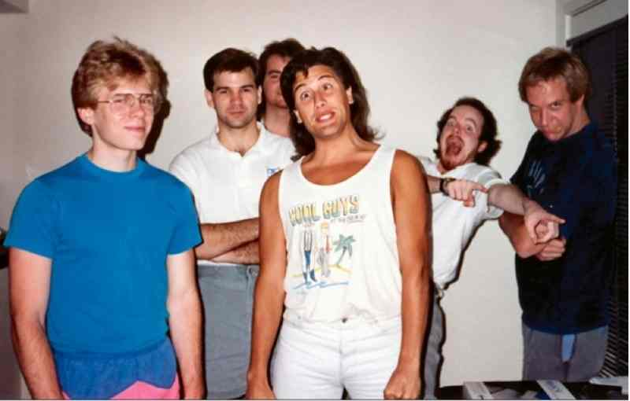
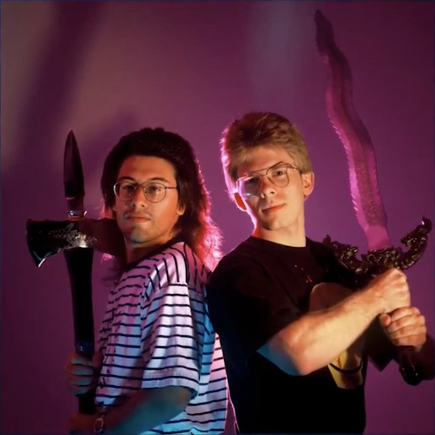
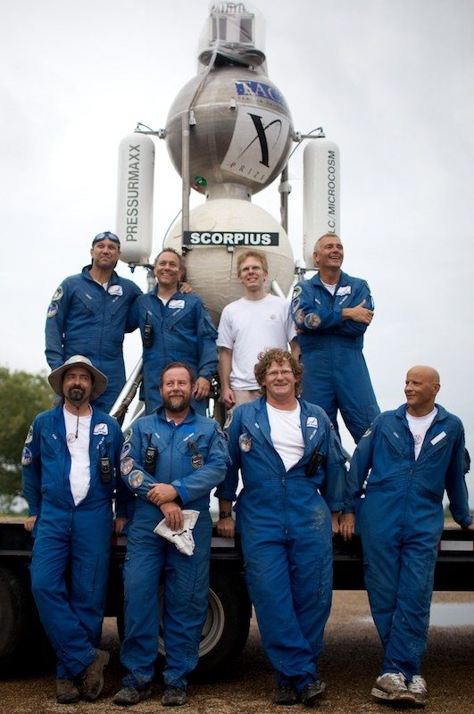

John Carmack
The man who defined First Person Shooters

Here are some facts about John's life:
- August 20 1970 - Born in Shawnee Mission, Kanzas
- 1990 - Creates Commander Keen with John Romero, Adrian Carmack and others
- May 5 1992 - Released Wolfenstein 3d as a main programmer
- December 10 1993 - Released Doom as a main programmer
- December 2 1999 - Released Quake 3: Arena as a main programmer
- August 3 2004 - Released Doom 3 as a technical director
- August 7 2013 - Joined Oculus VR as a CTO
- November 23 2013 Resigned from id Software to work full-time at Oculus VR
- November 13 2019 Stepped down to the role of "Consulting CTO" in order to allocate time to his work on AGI
- Owns Armadillo Aerospace company, aimed for space tourism venture. Hybernated in 2013
"This is my daily work . . . When I accomplish something, I write a * line that day. Whenever a bug / missing feature is mentioned during the day and I don’t fix it, I make a note of it. Some things get noted many times before they get fixed. Occasionally I go back through the old notes and mark with a + the things I have since fixed."-- David Kushner, Masters of Doom: How Two Guys Created an Empire and Transformed Pop Culture
Image Gallery

id Software early days

John Romero and John Carmack, 1990

John before the test launch of his rocket - Scorpio